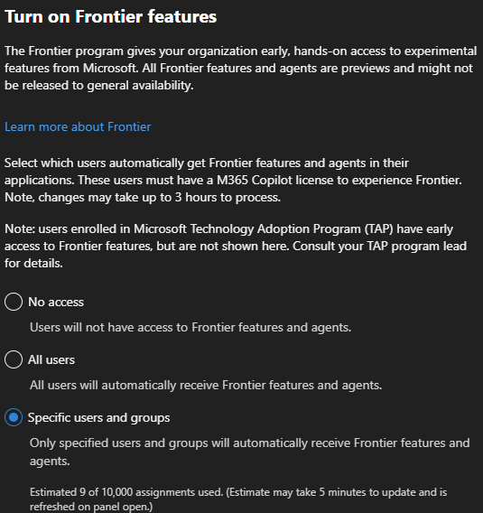
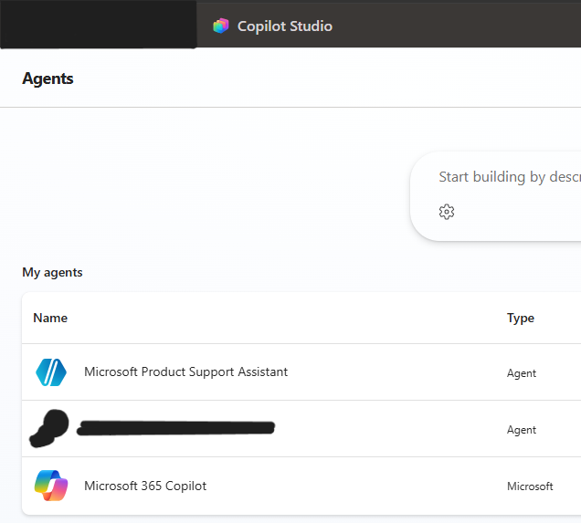
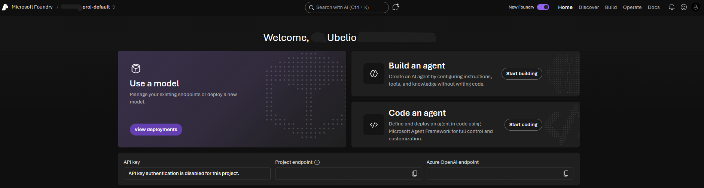
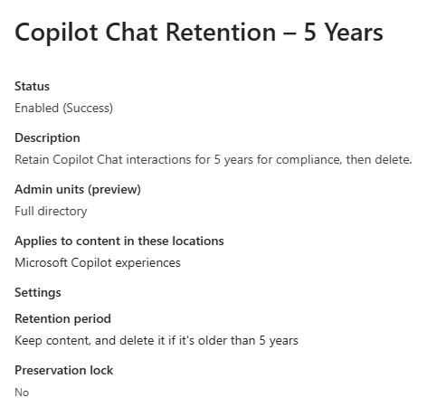
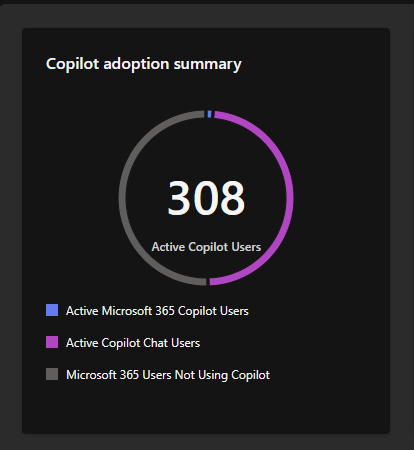

The Problem
Before this work, the organization had no real in-house experience or roadmap for AI beyond a free tier of Copilot Chat. Copilot Pro licensing hadn't been explored, the Microsoft Frontier program hadn't been evaluated, Copilot Studio permissions were minimal, and there was no Azure AI Foundry setup for future pro-code agent development. The existing AI policy had only ever been written for the free Copilot Chat tier and hadn't kept pace with what the platform could actually do.
What I Built
I took AI adoption from a single free license to a governed, org-wide program. I rolled out Copilot Pro licensing to its full capability, enrolled the organization in Microsoft's Frontier program for early access to experimental Copilot features, expanded Copilot Studio permissions to enable in-house agent development, and stood up Azure AI Foundry for future pro-code agent development. On the governance side, I rewrote the existing AI policy (which had only covered free Copilot Chat) to reflect the expanded platform, built admin guides for retrieving Copilot chat history, set up recurring Copilot usage reporting for supervisors and the security/risk team, and implemented AI retention policy for Copilot chat interactions to meet compliance requirements in a highly regulated environment.
How It Works
- Copilot Pro rollout and Frontier program enrollment gave the organization early access to experimental Copilot features ahead of general availability

- Copilot Studio: expanded permissions enabled in-house agent development — the org now runs multiple in-house Copilot Studio agents (including two documented as their own projects) alongside 10+ third-party agents

- Azure AI Foundry set up as the foundation for future pro-code, full-control agent development beyond what Copilot Studio's low-code builder supports

- AI policy rewritten to cover the expanded Copilot platform, replacing the original policy that only addressed the free Copilot Chat tier
- Admin guides created for retrieving Copilot chat history on behalf of users when needed
- Recurring Copilot usage reports delivered to supervisors and the security/risk team for oversight
- Compliance-driven retention policy implemented for Copilot chat interactions to meet regulatory requirements

- Agent administration governed through DLP policies combined with standard Microsoft 365 admin governance features, with 2 departments currently using custom agents; evaluating Microsoft Agent 365 for future expansion
Impact
- Grew from a single free Copilot Chat license to a governed AI program spanning Copilot Pro, Frontier features, Copilot Studio, and Azure AI Foundry
- 300+ active Copilot users across the organization
- Replaced a policy written only for free Copilot Chat with a governance framework covering the full expanded platform
- Established compliance-driven chat retention meeting regulatory requirements for a highly regulated environment
- Gave supervisors and the security/risk team ongoing visibility into Copilot usage through recurring reporting
- Agent oversight extended to 10+ third-party agents plus in-house Copilot Studio agents across 2 departments, governed under DLP and standard M365 admin controls

Roadmap
Evaluating Microsoft Agent 365 as the next step in agent administration maturity, and continuing pro-code agent development in Azure AI Foundry.